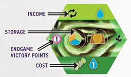
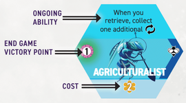
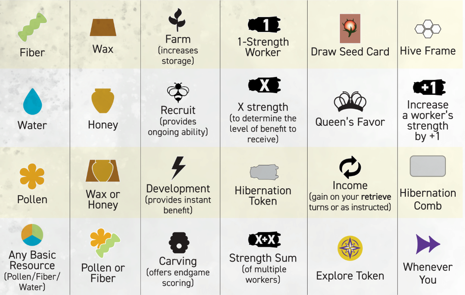

Apiary
Board Game Arena 官方规则文档
Overview
No humans. Only bees. Space bees. Bees in space. You manage one of the twenty possible factions within the hive and you want to earn the Queen's Favor. Send your bees to explore planets, gather resources, build farms, and strengthen your workers. For the glory of the hive!
Components
Your Hive
Your starting hive consists of three hexes: one faction hex with a unique ability and two storage hexes. You also have 4 workers, each at 1-Strength. You cannot have more than 4 workers at a time, but some will grow strong enough to hibernate and others can take their place.
Main Board
In this game, you will place your worker bees in different locations to build up your hive and earn VP. The strength of the worker placed there determines what you can do. Action spaces do not get blocked--if you place a worker there, you bump the most recently placed worker from any player, including yourself (see Bumping in gameplay for more information).
There are X primary actions to choose from.
Explore
Move the QueenShip a number of spaces equal to your strength. If you land on an unexplored space (yellow circle), you gain those resources, then draw a random planet. If the planet has any empty spaces, you can choose a resource to seed. Then, no matter what, you gain the resources depicted on the planet.
Strength-4 Benefit
Some planets have Strength-4 benefits. If you use a Strength-4 worker and land on such a planet, you earn that benefit. Otherwise, you won't get anything additional.
Advance
Buy Farms , Recruits , and Developments . In a 4-5 player game, there are two separate placements--one to gain a Farm and one to gain Recruits or Developments.
- Farms (green) provides storage for resources and produces resources when you Retrieve your workers (if you choose this Farm to produce). Costs and/or .

- Recruits (blue) provide ongoing abilities, like discounts and bonuses. Costs .

- Developments (pink) One-time benefits. Costs Wax .
The total strength of workers at the location determines which tiles you can buy.
| Strength | Available Tiles |
|---|---|
| 2+ | Only the leftmost column |
| 3+ | Leftmost and middle column |
| 5+ | Any column |
Click a tile to select it, pay the cost indicated at the bottom of the tile, then place it on an empty hex. If it's a Development tile, you gain its benefits now. For Farms , you will gain them when you retrieve your workers. All tiles then slide to the left and are replaced.
Strength-4 Benefit
You gain 3 VP in addition to the tile.
Grow
Depending on your worker's strength, you can do the following:
- Gain a new worker: Pay 1 Pollen to add a new Strength-1 worker to your active pool.
- Gain a frame: Pay 2 basic resources to add a 4-hex section to your hive for increased space. If you complete this frame before the end of the game, you earn 8 VP.
You can "spend" your strength on more than one action. If you place a 3-Strength worker on this space, you can gain three 1-Strength workers (for the cost of 3 ) or gain one 1-Strength worker (for 1 ) and one new frame (for two basic resources).
Strength-4 Benefit
You can also upgrade your faction. Your faction's board will flip over and you can access new benefits.
Research
Draw seed cards equal to your strength. Add one to your hand and discard the rest. Seed cards can be played before or after your action on your turn. You can either gain a one-time benefit or one basic source.
Strength-4 Benefit
Instead of gaining the benefit, you can "plant" the card, which grants an endgame scoring opportunity. You can only have 2 planted seed cards, but you can upgrade to a max of four.
Convert
You can convert resources a number of times up to your worker's strength.
| Cost | Result |
|---|---|
| Discard one seed card from your hand | Gain one new seed card |
| Discard one basic resource | Gain any one basic resource |
| One + one | One |
| Two + one | One |
| Two + one | One |
You can also convert using any created dance.
Strength-4 Benefit
Before doing any conversions, you can create a dance that creates a customized conversion option. Choose assets (resources, Queen's Favors, VP, seed cards) to plug in to the given formula (determined from five dance tiles). It becomes immediately available for use. Each player can create only one dance. Each time any other player uses a dance that you created, you gain one Queen's Favor.
Carve
Pay Honey to gain a Carve tile and place it in your hive. These tiles are not replaced during the game, so there is a limited quantity. You can only place 4-Strength workers on this action space.
Non-Action Spots
The Queen's Favor track indicates each player's earned Queen's Favors. A player's position on the track indicates the VP gained at the end of the game.
The Hibernation Comb. When all spots in the Hibernation Comb are filled, each player takes one additional turn, and the game ends.
Gameplay

During the game, you will collect basic resources (Pollen , Fiber , Water ) and valuable resources (Wax , Honey ). These are stored in your hive, but storage capacity is limited and certain places can only store certain types. BGA will auto-arrange resources for you when they are gained, but if you are over capacity, you will have to choose what is discarded. For each resource discarded, you gain 1 Queen's Favor.
Resource icons that show multiple resource types like this indicate that you should choose one resource from those displayed, not that you get both.
On your turn, you will either place a worker in one of the action spots or retrieve all your workers from the board. If your turn begins and you have no workers on the board, your active pool, or your landing area, a 1-Strength worker is added to your inventory.
Bumping Workers
Action spots never get blocked. When you place a worker bee in an action spot where all its spaces are already occupied, the oldest worker gets "bumped", even if that worker is your own. Being bumped means that worker bee's player can choose to increase its strength by 1 and returns it to the active pool OR place it in the landing area and collect income on the player's next Retrieve action. If the bumped worker is already at 4-Strength, it must be placed in hibernation.
Retrieve
All your workers on the board (not your active pool) return to your landing area. For each worker of 1-Strength, 2-Strength, or 3-Strength, you may collect income from a different Farm . The strength of those workers then increases by 1 and they are returned to the active pool. Any 4-Strength workers must be placed in hibernation.
Hibernation
Workers cannot go past 4-Strength. If a 4-Strength worker is put in a situation where its strength would increase, it is instead put into the Hibernation Comb. Each pod in the Hibernation Comb confers a benefit (VP, resources, etc.) If there is no space to hibernate, gain 1 Queen's Favor instead.
This icon means you can gain 1 Wax and refresh the Development row in the Advance action spot.
Endgame and Scoring
When all players have taken their last turn after the Hibernation Comb is filled, scores are tallied from:
- Explore Tokens
- Seed cards
- Hibernation Comb pods
- Building on certain hexes in your hive
- Filling your hive and its frames
- Placing a 4-Strength worker on the Advance action
- 4-Strength abilities on planets
- Carve tiles
- Position on Queen's Favor track
- Farm, Recruit, and Development tiles
- Faction endgame ability
- Hibernation Comb section majority (player(s) with the most and second-most workers in hibernation win the VP indicated under that area)
Options
Hive & Faction Selection
Change the way Hive mats and Factions are distributed before the game starts.
- Beginner: All players start with a random Hive and random Faction tile from the pre-selected "Beginner" category.
- Normal: All players start with a random Hibe and two Faction tiles to choose from.
- Advanced: Factions and hives are drafted in a snake draft.
Seed Card Variant
If this is on, a player can play up to 2 seed cards per turn. No limit on how many cards a player can trade for basic resources. If this is off, players can play any number of seed cards during their turn.
Live Scoring
Scores are either hidden from view until the end of the game or tabulated as they are gained.
BGA Changes
The BGA version of Apiary includes some updated components from the first expansion Apiary: Expanding the Hive:
- Arti and Cecro faction tiles have been updated
- Updated Engineer and Pharmacist Recruit tiles
- The "2 seed cards" Explore Token has changed into "1 seed card"